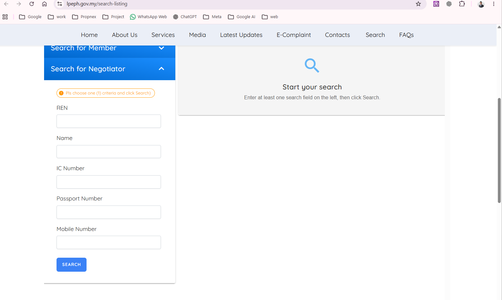
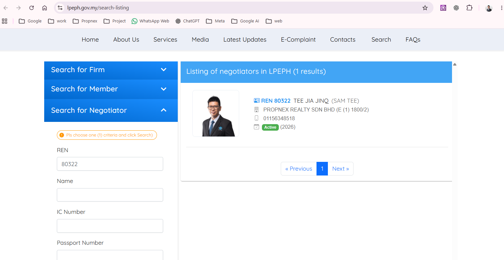
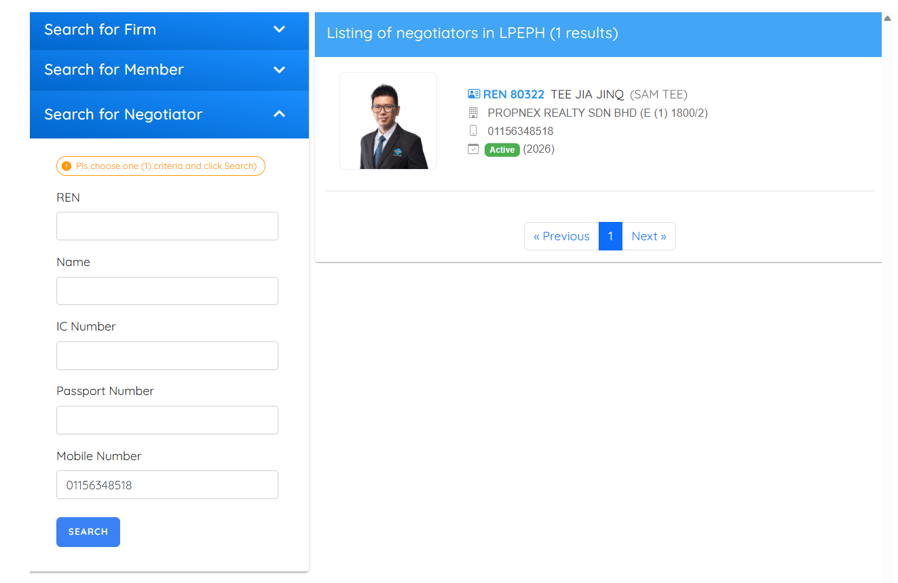
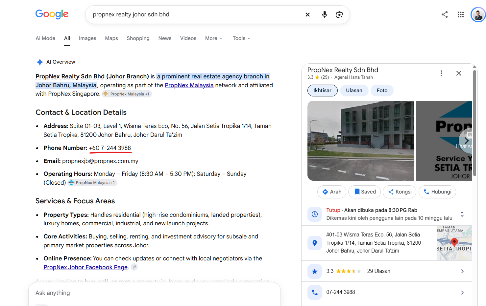

To check a property professional in Malaysia, search the official LPPEH directory using their REN number or mobile number, compare the registered details, then confirm their agency attachment directly with the firm.
Before buying, selling or renting, take a few minutes to verify the person you are dealing with. The Board of Valuers, Appraisers, Estate Agents and Property Managers (BOVAEP / LPPEH) provides a public directory. You can use the search without paying or creating an account.
A Real Estate Negotiator (REN) and a registered Estate Agent are different roles. These steps focus on checking a REN. If someone identifies themselves as an Estate Agent, use the directory's Search for Member option to check that registration instead.
Step 1: Visit the Official LPPEH Website
Open the official LPPEH search portal. Check that the address is lpeph.gov.my/search-listing. No login or account registration is required for a public search.
Step 2: Select “Search for Negotiator”
Scroll down to the search section and select Search for Negotiator. The fields include REN number, name and mobile number. Use one search criterion at a time, as the form instructs.

Step 3: Search Using the REN Number
Enter the person's REN number and click Search. The number is usually shown on their business card, REN tag or marketing material. For example, enter 80322 to check Sam Tee's record.
The result may display:
- Registered name and photograph.
- REN registration number.
- Registered real estate agency.
- Registration status, such as Active.
Compare these details with the person you are dealing with. Do not rely only on a copied REN number or photograph.

Step 4: Alternatively, Search by Mobile Number
If you do not have the REN number, try the person's mobile number. Enter it under Mobile Number and click Search. The screenshot uses Sam's business number, 01156348518.
Some negotiators use multiple phone numbers, so an unsuccessful search does not necessarily mean they are unregistered. If no result appears, request their REN number and search again.

Step 5: Double-Check With the Real Estate Agency
For additional peace of mind, contact the registered agency directly. Independently find the agency's official telephone number and confirm it on the firm's own website or official directory record, rather than relying only on a Google summary or a number supplied by the person.
Call the relevant branch office and ask its administration team whether the negotiator is currently attached to the agency. This adds another check, especially before making any payment.

Final Reminder
Checking registration can help you spot someone falsely claiming to be a registered property professional. However, an Active REN status does not guarantee that a particular listing or transaction is genuine. Always verify property details and payment instructions independently.
For official information, visit the LPPEH website. For broader ownership considerations, read the existing Foreign Buyer's Guide to Johor Property.
If you have questions about buying property in Johor Bahru, feel free to contact Sam Tee.
Sam Tee | REN 80322 | PropNex Malaysia